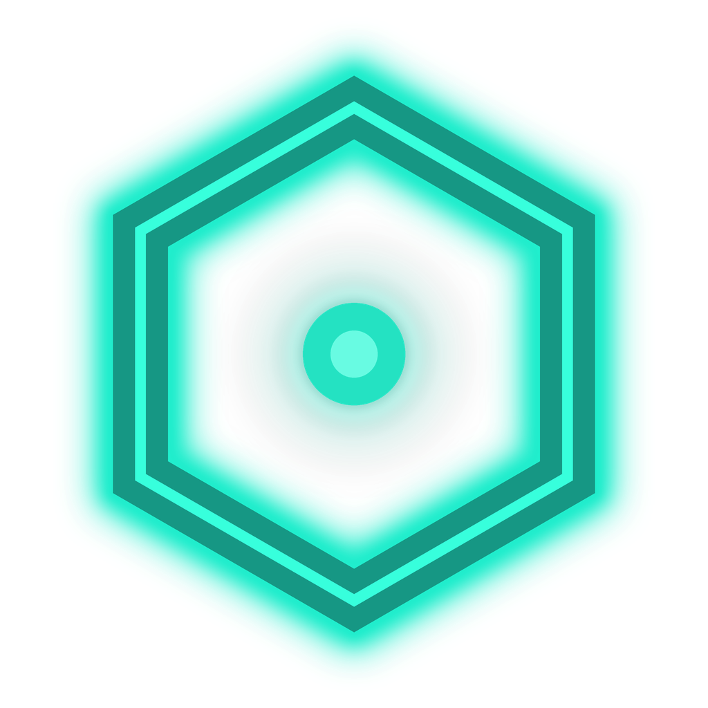

Прокси для Telegram
Локальный SOCKS5 через WebSocket

Статус обхода YouTube и Discord
Переключите рычаг, чтобы включить обход блокировок YouTube и Discord
Локальный SOCKS5 через WebSocket
Рекомендуем пройти подбор рабочей стратегии
Основной список обхода и дополнительные списки по выбору
Файл list-general.txt — Discord, YouTube и остальные домены обхода
Только домен, без https:// — например youtube.com
Список пуст — добавьте хотя бы один домен
Свои списки в lists/custom/; активный подключается как list-general-user.txt
Список пуст — добавьте домены
Создайте список или выберите существующий
Обновления, диагностика и расширенные настройки
Zapret HUB, движок обхода и TG Proxy — сравнение с GitHub
Второй слой обхода по IP-адресам. Для большинства пользователей оставьте «Отключён».
Крестик окна и проверка обновлений при запуске
Проверит конфликты и готовность системы
Zapret HUB — панель обхода блокировок
Discord · YouTube · Telegram